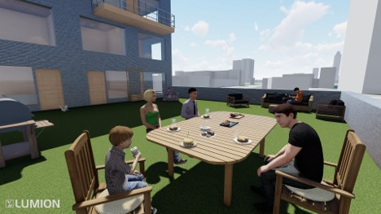
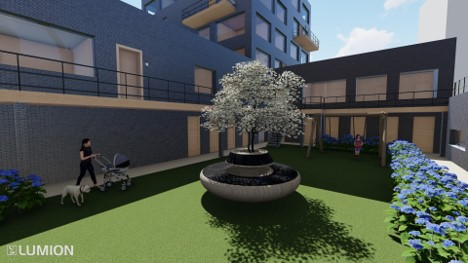
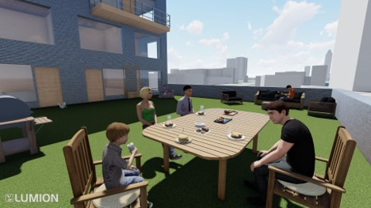
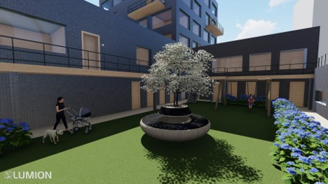

The Playground
Sint-jobsweg, Schiehaven
20-12-2021
Dit project moest er een appartement gebouw gemaakt worden op de locatie: Sint-Jobsweg, Rotterdam. Hiervoor moesten er verschillende analyses gedaan worden, waaronder een locatie-, geschiedenis- en demografieonderzoek. Ook moest er een zonnestudie, massastudie en een onderzoek gedaan worden naar materialen en een Programma van Eisen worden opgesteld. Uiteindelijk moest ook bepaald worden wie de doelgroep zou worden wie er voornamelijk komt te wonen. Dit is uiteindelijk geworden jonge stellen met kinderen en er zijn ook appartementen voor alleenstaande mensen.
Uitgangspunten voor het ontwerp:
- Moet beschikken over minimaal 20 woningen
- Ondergrondse parkeergarage
- Moet binnen de kavel passen
Mijn visie
Mijn visie op dit ontwerp was dat het moest aansluiten op de gebouwen die eromheen gelegen zijn en moest een verbinding hebben met de geschiedenis van de locatie. Doordat het in een druk gebied ligt moet het een veilige plek vormen waar kinderen veilig kunnen spelen door middel van verschillende pleinen.

 


